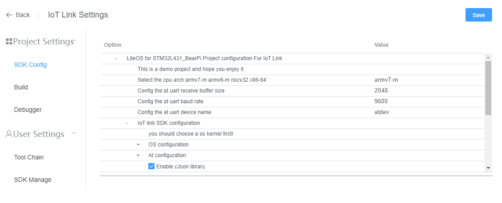
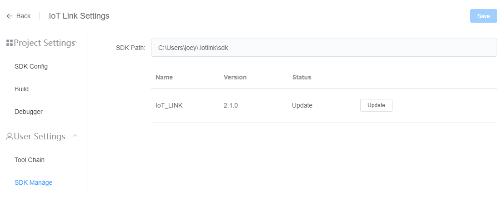

Configuration Management
SDK Configuration
Open ‘IoT Link Settings’-‘Project Settings’-‘SDK Config’

- You can turn on / off the SDK functions, or select the module type.
- After modification, click the "Save" button, a .config file and iot_config.h file will be generated in the root directory of the project. You can reference these configurations in Makefile or source code.
- The underlying SDK configuration is Kconfig for Linux, which depends on the Kconfig file in the root directory of the current project.
SDK Management
Open ‘IoT Link Settings’-‘User Settings’-‘SDK Manage’ 
- SDK management will automatically detect the locally installed SDK and the latest SDK on the server
- When there is a version update, please click the ‘Update’ button to download and install